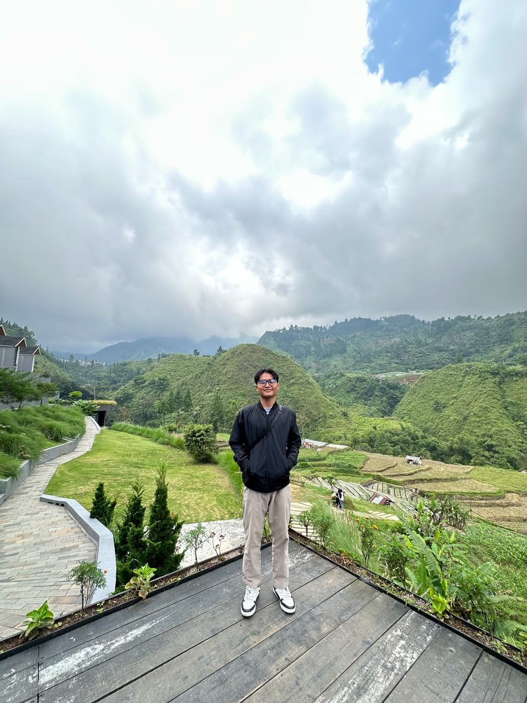
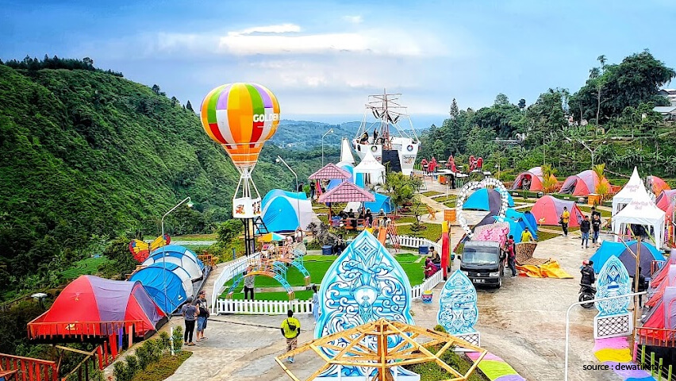

Tentang Saya

Profil Mahasiswa
Halo! Perkenalkan, saya Zainudin Ahmad Ramdani, biasa dipanggil Zain. Saya adalah orang yang tertarik dengan dunia teknologi dan juga pendidikan. Saat ini, saya adalah mahasiswa Pendidikan Profesi Guru (PPG) Prajabatan bidang studi Informatika di Universitas Muhammadiyah Surakarta.
Ketertarikan & Hobi
- Mengikuti berita teknologi
- Bermain Game
- Menonton film
Pendidikan
- Lulusan: S1 Pendidikan Informatika STKIP NU Kab. Tegal
- Sedang berjalan: Pendidikan Profesi Guru (PPG) Prajabatan bidang studi Informatika UMS

Daerah Asal dan Keunikanya
Saya berasal dari Daerah Tegal, Jawa Tengah, sebuah wilayah yang kental dengan kehangatan tradisi 'medang poci' dan kulinernya yang merakyat. Masyarakat Tegal dikenal luas memiliki karakter yang ulet, pekerja keras, dan blakasuta—jujur serta apa adanya. Semangat pantang menyerah, ketangguhan, dan keterbukaan dari daerah asal saya inilah yang selalu saya bawa dan jadikan fondasi kuat dalam setiap langkah pendidikan dan kehidupan saya.
Destinasi Wisata
- Pemandian Air Panas Guci
- Waduk Cacaban
- Kaki Gunung Slamet
- Pantai Alam Indah (PAI)
- Situs Semedo
Makanan Khas
- Tahu Aci
- Soto Tauco
- Kupat Bongkok

Inspirasi & Tujuan
Berawal dari latar belakang Pendidikan Informatika, misi saya adalah menjembatani kesenjangan digital di ruang kelas. Saya terinspirasi untuk menjadi Guru Profesional yang tidak hanya mengajar teori, tetapi juga mampu membekali siswa dengan kompetensi digital masa depan melalui pendekatan yang inovatif dan berpusat pada peserta didik.
Anak-anak hidup dan tumbuh sesuai kodratnya sendiri. Pendidik hanya dapat merawat dan menuntun tumbuhnya kodrat itu.
Ki Hadjar Dewantara